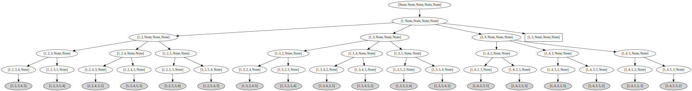
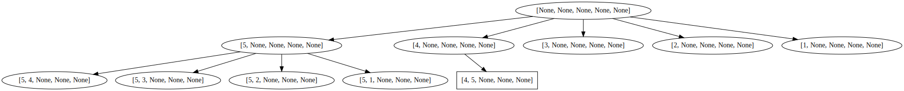

Breadth First Search
Jacky Baltes
National Taiwan Normal University
Taipei, Taiwan
jacky.baltes@ntnu.edu.tw

AI Problems
- Depth First Search (DFS) expands a search tree from the root to the leaves (top to bottom)
- The children of a node are expanded first from left to right
- DFS may not find the optimal solution (fewest number of steps from the root)
- This may cause problems because a subtree may be very deep or even infinite
- All the work done is wasted if we have to backtrack
- Breadth First Search (BFS) expands a search level by level.
- Search will not fall into a deep or infinite subtree
- Guaranteed to find shortest path solution. If a solution can be found at the top of the tree, then BFS will find it
import graphviz as gv
import os
dir = '/content/images/'
os.system( f"mkdir {dir}")
NO_SOLUTION, SOLUTION, POSSIBLE_SOLUTION = 0,1,2
def is_valid( table ):
if ( table[1] == len(table) ):
return SOLUTION
if None in table:
return POSSIBLE_SOLUTION
else:
return NO_SOLUTION
def bickering_brothers_csp( n_brothers, first_solution = False, dfs = True ):
initial = [ None ] * n_brothers
queue = []
g = gv.Digraph( comment='Breadth First Search' )
img = 0
queue.append( (initial,0, [] ) )
num_nodes = len(queue)
sols = []
if dfs:
pop_index = -1
else:
pop_index = 0
while( len(queue) > 0 ):
current, level, parent = queue.pop(pop_index) # Pop item from the start of the list
valid = is_valid(current)
if valid == SOLUTION:
sols.append( current)
g.node( str(current), shape='box')
if parent is not None and len(parent) > 0:
g.edge( str(parent[-1]), str(current) )
g.render( f"{dir}/g1_{img:05d}",format='png' )
img = img + 1
if first_solution:
return num_nodes, sols, g
elif valid == POSSIBLE_SOLUTION:
g.node( str(current) )
if parent is not None and len(parent) > 0:
g.edge( str(parent[-1]), str(current) )
g.render( f"{dir}/g1_{img:05d}",format='png' )
img = img + 1
#print(" " * level, current)
for bi in range(len(current)): #-1,-1,-1):
if current[bi] is None:
for nb in range(n_brothers, 0,-1):
if nb not in current:
next = current.copy()
next[bi] = nb
queue.append( (next, level+1, parent.copy() + [ current ] ) )
num_nodes = num_nodes + 1
break
else:
g.node( str(current ), style='filled', fillcolor="lightgray" )
if parent is not None and len(parent) > 0:
g.edge( str(parent[-1]), str(current), )
g.render( f"{dir}/g1_{img:05d}",format='png' )
img = img + 1
return num_nodes, sols, g
num_nodes_slow = 0
num_nodes_csp = 0
n_brothers = 5
num_nodes_dfs, _ , g= bickering_brothers_csp( n_brothers, True, True )
dfs1 = addJBGraph( "dfs1", 0, 0, g )
num_nodes_bfs, _ , g= bickering_brothers_csp( n_brothers, True, False )
bfs1 = addJBGraph( "bfs1", 0, 0, g )
print( f'Solutions for {n_brothers} number of nodes dfs {num_nodes_dfs} bfs {num_nodes_bfs}' )
Solutions for 5 number of nodes dfs 55 bfs 38
Breadth First Search and Trees
|  |  |
Analysis of Search Tree
- Branching factor b is the averagre number of children for all the nodes in the tree
- Depth of the tree d is the number of levels in the tree
- Important result is that the number of leaf nodes \[ N = b ^ d \]
- Estimate of the difficulty of the problem
- Technically, we must also include the nodes in the upper parts of the tree \[ W = \sum_{i=0}^d b^i \]
- Assume that the branching factor is 2, then we are dealing with a binary tree
- \[ \sum_{i=0}^d 2^i = 2^{i+1} - 1 \]
- The Eddington number is the estimated number of hydrogen atoms in the universe
- Eddingotn number is \( 10^{80} \) = \( 2 ^ {265} \)
- So for finding a solution, the computational complexity explodes even for small branching factor b
- If there is many solution, then maybe you can work in this space and find one
- For example, if a space of size \( 10^{80} \), but there are \( 10^{79} \) solutions, then your chance of finding a solution by chance is 10%. In this case, you would use generate-and-test approach, where you generate a solution and test it. If it fails, then you generate another solution.
Disadvantage of Breadth First Search
- Breadth First Search is only suitable for small problems, because the amount of memory that it needs is also exponential in the depth of the search
- Depth First Search must remember which nodes were expanded already as it goes through the tree
- Memory complexity of DFS is \( b * d \)
- Breadth First Search must remember all the nodes at each level
- Memory complexity of BFS is \( b^d \)
Depth 1 Time 1.00 msec Mem (DFS) 100B Mem (BFS) 100B
Depth 2 Time 8.00 msec Mem (DFS) 200B Mem (BFS) 800B
Depth 3 Time 57.00 msec Mem (DFS) 300B Mem (BFS) 5KB 580B
Depth 4 Time 400.00 msec Mem (DFS) 400B Mem (BFS) 39KB 64B
Depth 5 Time 2.0s 801.00 msec Mem (DFS) 500B Mem (BFS) 273KB 548B
Depth 6 Time 19.0s 608.00 msec Mem (DFS) 600B Mem (BFS) 1MB 890KB 864B
Depth 7 Time 2.0m 17.0s 257.00 msec Mem (DFS) 700B Mem (BFS) 13MB 92KB 4B
Depth 8 Time 16.0m 800.00 msec Mem (DFS) 800B Mem (BFS) 91MB 644KB 128B
Depth 9 Time 1.0h 52.0m 5.0s 601.00 msec Mem (DFS) 900B Mem (BFS) 641MB 412KB 996B
Depth 10 Time 13.0h 4.0m 39.0s 208.00 msec Mem (DFS) 1000B Mem (BFS) 4GB 393MB 842KB
Depth 11 Time 3.0d 19.0h 32.0m 34.0s Mem (DFS) 1KB 76B Mem (BFS) 30GB 708MB 780KB
Depth 12 Time 0.0y 26.0d 16.0h 48.0m Mem (DFS) 1KB 176B Mem (BFS) 214GB 865MB 343KB
Depth 13 Time 0.0y 186.0d 21.0h 36.0m Mem (DFS) 1KB 276B Mem (BFS) 1TB 479GB 937MB
Depth 14 Time 3.0y 212.0d 13.0h 12.0m Mem (DFS) 1KB 376B Mem (BFS) 10TB 287GB 417MB
Depth 15 Time 25.0y 26.0d 20.0h 30.0m Mem (DFS) 1KB 476B Mem (BFS) 71TB 987GB 873MB
Depth 16 Time 1.0c 75.0y 187.0d 23.0h Mem (DFS) 1KB 576B Mem (BFS) 503TB 770GB 997MB
Depth 17 Time 1.0m 2.0c 28.0y 220.0d Mem (DFS) 1KB 676B Mem (BFS) 3526TB 276GB 840MB
Depth 18 Time 8.0m 6.0c 0.0y 79.0d Mem (DFS) 1KB 776B Mem (BFS) 24683TB 913GB 760MB
Depth 19 Time 60.0m 2.0c 1.0y 194.0d Mem (DFS) 1KB 876B Mem (BFS) 172787TB 252GB 201MB
Depth 20 Time 421.0m 4.0c 10.0y 264.0d Mem (DFS) 1KB 976B Mem (BFS) 1209510TB 741GB 387MB
Depth 21 Time 2949.0m 8.0c 75.0y 23.0d Mem (DFS) 2KB 52B Mem (BFS) 8466575TB 69GB 663MB
Depth 22 Time 20649.0m 1.0c 25.0y 165.0d Mem (DFS) 2KB 152B Mem (BFS) 59266025TB 487GB 547MB
Depth 23 Time 144543.0m 8.0c 78.0y 65.0d Mem (DFS) 2KB 252B Mem (BFS) 414862178TB 340GB 762MB
Depth 24 Time 1011807.0m 1.0c 47.0y 91.0d Mem (DFS) 2KB 352B Mem (BFS) 2904035248TB 337GB 218MB